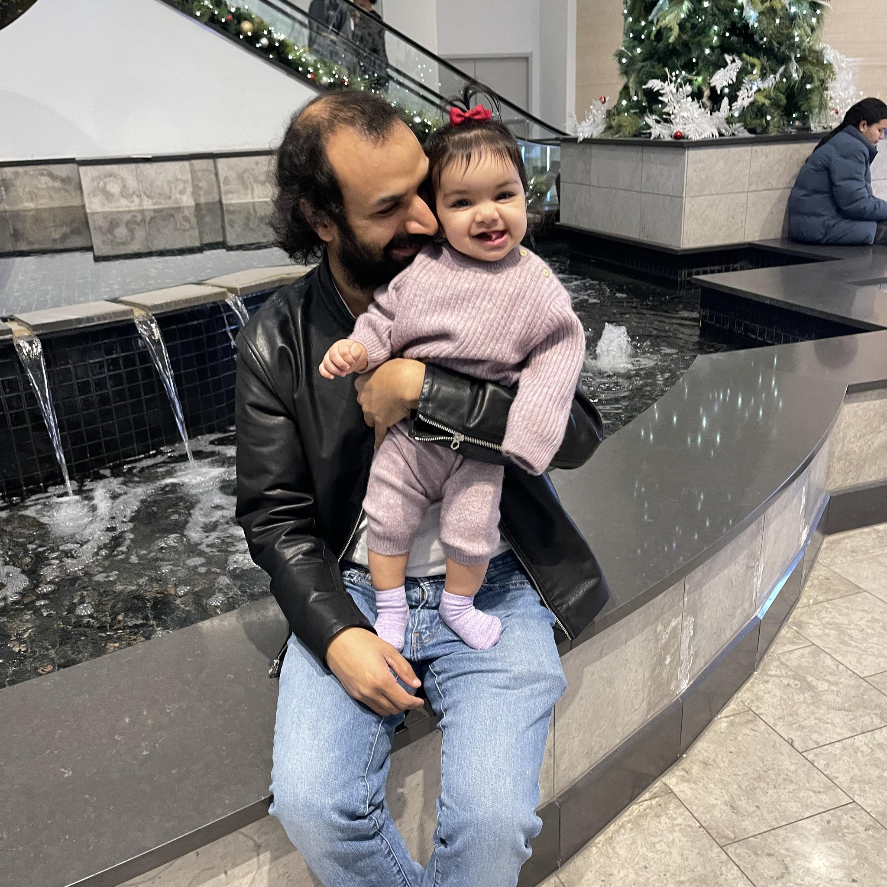

Deep Generative Sampling in the Dual Divergence Space: A Data-efficient & Interpretative Approach for Generative AI. Garg et al. 2024. Preprint PDF.
Empowering Time Series Analysis with Large Language Models: A Survey. Jiang et al. 2024. PDF
Lag-Llama: Towards Foundation Models for Probabilistic Time Series Forecasting. Rasul et al. NeurIPS 2023 Workshop: R0-FoMo. PDF, Code.
In- or Out-of-Distribution Detection via Dual Divergence Estimation. Garg et al. UAI-23. PDF, Code.
Information Theoretic Clustering via Divergence Maximization among Clusters. Garg et al. UAI-23. PDF, Code.
Estimating Transfer Entropy under Long Ranged Dependencies. Garg et al. UAI-22. PDF, Code.
Increased Metaphor Production in Open-Ended Speech Samples of Patients With Prodromal and Developed Schizophrenia Detected with NLP. Srivastava et al. Biological Psychiatry, 2022.
Negative symptoms and speech pauses in youths at clinical high risk for psychosis. Stanislawski et al. NPJ Schizophrenia, 2021. PDF
NERO: a biomedical named-entity (recognition) ontology with a large, annotated corpus reveals meaningful associations through text embedding. Wang et al. NPJ Systems Biology and Applications, 2021. PDF
Linking language features to clinical symptoms and multimodal imaging in individuals at clinical high risk for psychosis. Haas et al. European Psychiatry, 2020. PDF
Modeling Dialogues with Hashcode Representations: A Nonparametric Approach. Garg et al. AAAI-20. PDF.
Nearly-Unsupervised Hashcode Representations for Relation Extraction. Garg et al. EMNLP-19. PDF, Code.
Kernelized Hashcode Representations for Relation Extraction. Garg et al. AAAI-19. PDF, Code.
Stochastic Learning of Nonstationary Kernels for Natural Language Modeling. Garg et al. 2017. PDF.
Neurogenesis-Inspired Dictionary Learning: Online Model Adaption in a Changing World. Sahil Garg*, Irina Rish, Guillermo Cecchi, Aurelie Lozano. IJCAI-17. PDF, Code.
Extracting Biopathway Interactions using Semantic Parsing of Biomedical Text. Garg et al. AAAI-16. PDF, Code.
Persistent Monitoring of Stochastic Spatio-temporal Phenomena with a Small Team of Robots. Garg et al. RSS-14. PDF.
Learning Nonstationary Space-Time Models for Environmental Monitoring. Garg et al. AAAI-12. PDF, Code.
See Google Scholar for an extended list of the papers.
This site is text-positive and defiantly retro (hand-crafted HTML 1.0).